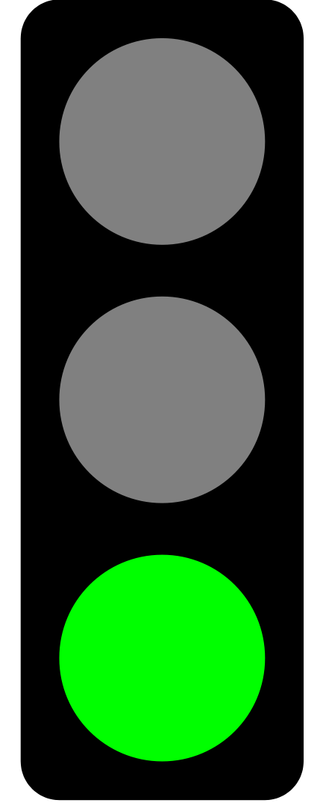

Wir wollen im Bereich der IT-Infrastruktur den Stromverbrauch messen und dessen zeitlichen Verlauf über eine Woche hin dokumentieren und analysieren. Anhand dieser Daten wollen wir das Einsparungspotential ausloten und entsprechende Verbesserungsvorschläge entwickeln, sowie auch gegebenenfalls umsetzen.
Im Server-Raum 078 soll die vorhandene Überwachungsinfrastruktur der Diplomarbeitsgruppe „Custodio“ analysiert und weiter verbessert und außerdem ein neues Überwachungssystem für den "Serverraum alt" eingerichtet werden.
| Ampel | Datum | Status |
|---|---|---|
| 2017-12-22 | Das Webinterface, welches die aktuellen Daten der Temperatursensoren des Raumes 078 anzeigt, ist einsatzbereit. Es wurde außerdem getestet, ob die richtigen Werte auf der Webseite angezeigt werden. 11 Sensoren für den Raum 078 wurden verlegt und getestet, indem die gelieferten Werte mit der geschätzten Raumtemperatur und den anderen Sensoren verglichen wurden. Im Zuge des Anlötens der Sensoren an die Kabeladern wurden 2 Sensoren zerstört. Da ebenfalls noch Sensoren für das redundante Temperaturüberwachungssystem nötig sind, werden 20 weitere Sensoren sowie ein UMTS-Stick besorgt. Mit diesen 20 Sensoren wird das zweite System aufgebaut sowie die Lücken im derzeitigen System im Raum 078 behoben. Der SMS-Dienst für die Sensorüberwachung wurde weiterentwickelt und getestet, indem Test-SMS verschickt wurden. Die SIM-Karte hat derzeit noch 45 SMS frei und läuft am 08.01.2018 ab. Die Ergebnisse der BellEquip Messstation wurden mittels eines Python-Programmes in CSV-Dateien geschrieben, für jede Messklemme ein Ordner, in welchem die Dateien liegen, und zwar für jeden Tag eine, um so leichter ausgewertet werden zu können. Jedoch ist von einer der drei Messklemmen nur von einem Tag eine Messung vorhanden, da sie am zweiten Tag aufgegangen ist und die Werte somit nicht mehr zuverlässig sind. Die Messgeräte, welche im EDV Saal 4 angehängt waren, wurden ausgelesen und die Werte abgespeichert. Diese sind bereit, ausgewertet zu werden, indem die Werte mittels der Zeit sowie der Anzahl der Geräte hochgerechnet werden, und daraus der ökologische sowie der CO2 Fußabdruck bestimmt wird. |
| 2017-12-08 | Es wurden erstmals Daten von der Messstation von BellEquip automatisiert ausgelesen und gespeichert, sowie ein Konzept zur Auswertung ausgearbeitet. Des Weiteren sind die Sensoren und Raspberrys für die Serverraumüberwachung angekommen. Diese wurden bereits getestet, und es wurde ein Skript entwickelt, um die Sensoren auszulesen. Außerdem konnte ein System zur Erfassung der Laufzeiten der PCs erstellt sowie geplant und getestet werden. | |
| 2017-11-24 | Die zuständigen Projektmitarbeiter haben sich mit der Messstation der Firma Bellequip auseinandergesetzt, sowie die ersten Probleme damit überwunden. Die automatische Benachrichtigung per SNMP wurde mit der Kontaktperson der Firma, Herrn Schuh, besprochen. Außerdem wurde uns ein Messgerät zu Verfügung gestellt, mit welchem wir einzelne Geräte sehr genau messen und diese Daten an eine Sammelstelle schicken können. Jedoch konnten noch keine weiteren Sensoren in den Serverraum eingebaut werden, da diese noch nicht eingetroffen sind. | |
| 2017-11-11 | Das Experiment im Serverraum konnte erfolgreich durchgeführt werden, und die Probleme mit der Serverraumüberwachung wurden behoben. Des Weiteren wurden die ersten Benchmarktests durchgeführt, und es wurde mit der Erstellung eines Messplans begonnen. Jedoch konnten noch keine weiteren Sensoren eingebaut werden, da diese noch nicht eingetroffen sind. | |
| 2017-10-27 | Die Aufgaben konnten nicht vollständig erfüllt werden. Außerdem verzögerte sich die Beschaffung der einzubauenden Komponenten für den Serverraum, da die Bestellung noch im Gange ist. Das Experiment (zur Festellung der Temperaturkurve) wurde nun dahingehend vorbereitet, dass keine zusätzlichen Sensoren dabei verwendet werden. | |
| 2017-10-13 | Die für diese Woche vorgesehenen Aufgaben konnten nicht fertiggestellt werden, dennoch wurde der Vorsprint Shenzou zum Wechseln zu Scrum vollendet und das weitere Vorgehen besprochen. | |
| 2017-10-09 | Es wurde ein Krisenmeeting abgehalten, da es zu Verzögerungen bei der Planung und bei der Bestellung der Bauteile für den Severraum kommt. Außerdem ist ein Projektmitglied seit 1 1/2 Wochen im Krankenstand. Die Planungsmethode wurde von Wasserfall auf Scrum geändert, da die Wasserfallmethode zuviel Zeit bennötigt. Weiters wurde beschlossen, alle Oktobertermine um je eine Woche nach hinten zu verschieben. Ende der Woche wird es ein weiteres Meeting geben, um den bis dahin erstellten Productbacklog zu besprechen. | |
| 2017-10-06 | Die Aufgaben konnten nicht vollständig erfüllt werden. Außerdem verzögert sich die Beschaffung von benötigten Ressourcen. | |
|  | 2017-09-22 | Die wichtigsten Aufgaben wurden erfüllt und das weitere Vorgehen vorbereitet. Außerdem wurde der Diplomarbeitsantrag erfolgreich eingereicht. |
| 2017-09-08 | Es wurde an dem Projekt weitergearbeitet, jedoch wurden die Tasks, welche letzte Woche als Ziel gesetzt wurden, nicht abgeschlossen. Des Weiteren sind Unstimmigkeiten erkannt worden. | |
| 2017-08-25 | Es wurde an dem Projekt weitergearbeitet, jedoch wurden die Tasks, welche letzte Woche als Ziel gesetzt wurden, nicht abgeschlossen. | |
| 2017-08-11 | Es wurde nicht an dem Projekt weitergearbeitet. | |
| 2017-07-28 | Es wurde die Inventur fortgesetzt, sowie die Sensorik im Serverraum grob erfasst. | |
| 2017-07-14 | Es wurden die Messgeräte überprüft, sowie das weitere Vorgehen besprochen. Des Weiteren wurde die Inventur fortgesetzt. | |
| 2017-06-30 | Es wurden das Kickoff-Meeting sowie ein Programmmeeting abgehalten, bei denen das weitere Vorgehen und die Zusammenarbeit mit den Team PHOENIX und ATLAS besprochen wurden. |
Wenn Sie mehr Informationen über unser Projekt haben möchten, würden wir uns freuen wenn Sie uns kontaktieren.
Kontakt